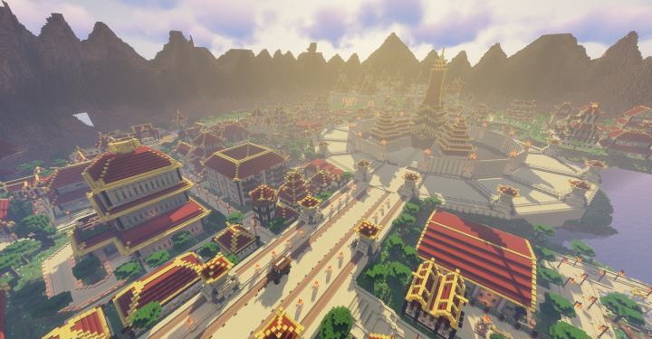
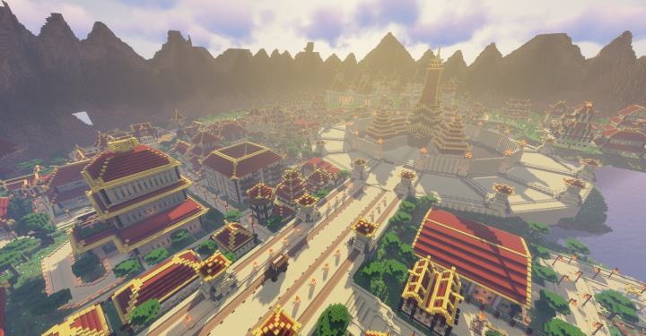

Zuko is a firebending master, born as a prince in the Fire Nation Royal Family, who held the title of Fire Lord from 100 AG to 167 AG. Originally the primary enemy of Team Avatar, Zuko devoted three years to trying to capture the long-lost Avatar to end his banishment and regain his honor as Crown Prince of the Fire Nation. He is recognizable by the distinctive scar on the left side of his face, which was given to him by his father, Fire Lord Ozai, shortly before his banishment as a result of an incident in which he unintentionally disrespected his father by speaking out of turn and refusing to duel him.
With support from his paternal uncle, General Iroh, and after much internal struggle and turmoil, Zuko rejected Ozai and his model of the Fire Nation. He instead joined the Avatar's group to become Aang's lifelong friend and firebending mentor and was determined to end the war and restore both his and the Fire Nation's honor. While Aang defeated Ozai, Zuko, with the help of Katara, defeated his younger sister Princess Azula and took his place as Fire Lord, declaring the end of the Hundred Year War and the start of an era of love and peace.

At the beginning of his reign, Zuko had to overcome great difficulties and solve several crises, especially those caused by the Harmony Restoration Movement and the New Ozai Society. Nevertheless, he succeeded in maintaining peace and eventually became one of the founders of the United Republic of Nations. Zuko stepped down from his position as Fire Lord in 167 AG and became an ambassador of peace, relinquishing the throne to his daughter, Izumi.